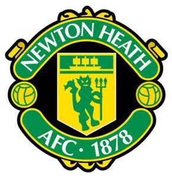
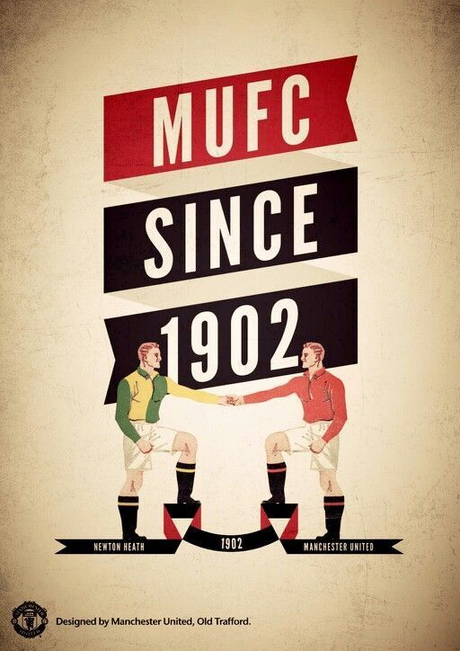
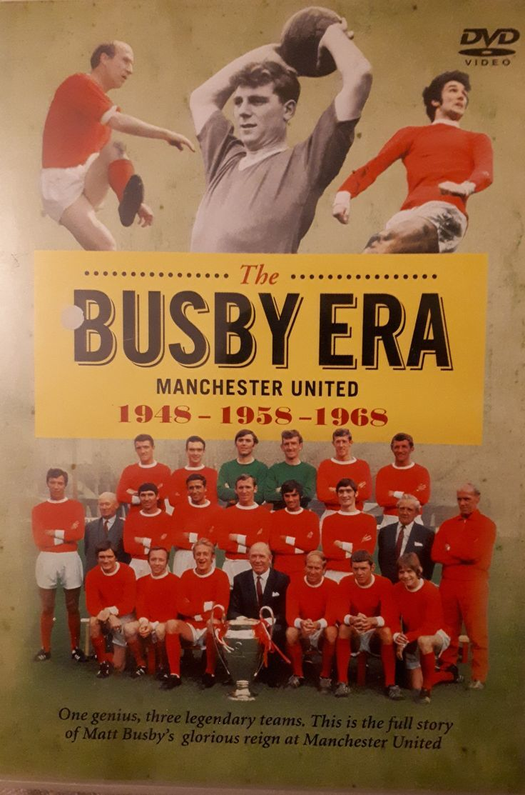
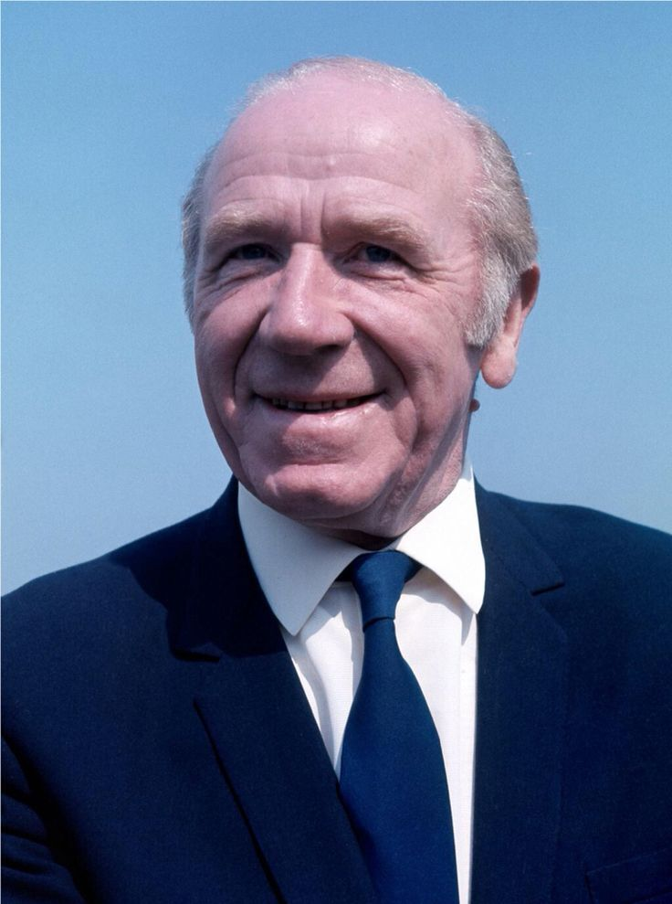
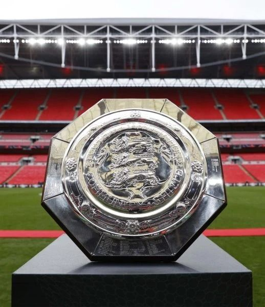

HISTORY
Est. 1878
Manchester United
Newton Heath → Manchester United → Global Football Icon
Est. 1878
Newton Heath → Manchester United → Global Football Icon
Origins
Manchester United was founded in 1878 as Newton Heath LYR Football Club by workers of the Lancashire and Yorkshire Railway. The club played in black and gold before eventually adopting the now-famous red shirts.
After financial difficulty brought the club to the brink of collapse, local businessman John Henry Davies rescued them in 1902, renaming the club Manchester United.
The club moved to Old Trafford in 1910, a ground that would become known as the "Theatre of Dreams." With a current capacity of 74,310, Old Trafford is the largest club stadium in England.
View Club Records →



6 February 1958
On 6 February 1958, British European Airways Flight 609 crashed on its third attempt to take off from a slush-covered runway at Munich-Riem Airport. The plane was carrying the Manchester United squad — the "Busby Babes" — home from a European Cup match in Belgrade.
Twenty-three of the 44 people on board died. Eight were Manchester United players. Matt Busby himself was critically injured, receiving last rites twice. Yet he survived, rebuilt the club from the rubble, and led a new generation of United players to the European Cup in 1968 — dedicating the trophy to those lost in Munich.
IN MEMORIAM · FOREVER RED
6 · II · 1958
MUNICH
Eight players gave their lives
so this club could live forever
"The flowers of Manchester"
Key Eras
The club was born as Newton Heath LYR Football Club by Lancashire and Yorkshire Railway workers in Manchester.
After near bankruptcy, John Henry Davies saved the club and renamed it Manchester United.

Sir Matt Busby transformed United into a footballing force. The Busby Babes were devastated by the Munich Air Disaster in 1958, but Busby rebuilt and led United to become the first English club to win the European Cup in 1968, with George Best, Bobby Charlton, and Denis Law.

Sir Alex Ferguson's 27-year reign is the greatest managerial tenure in football history. 13 Premier League titles, 5 FA Cups, 2 Champions Leagues. Ferguson turned United into the dominant force of English football.

United won the Premier League, FA Cup, and Champions League — completing an unprecedented Treble. Two injury-time goals by Sheringham and Solskjaer against Bayern Munich in the most dramatic finale in football history.

Ronaldo's 42-goal season powered United to the Premier League and a penalty win over Chelsea in Moscow. Ronaldo won the Ballon d'Or.


Club Legends
The greatest manager in football history. 13 Premier League titles, 2 Champions Leagues, 5 FA Cups. Simply irreplaceable.

The father of modern Manchester United. Built three great teams, survived Munich, and led United to the European Cup in 1968.
Joined as a teenage winger and left as the world's best player. His 42-goal 2007–08 season powered United to the Champions League.
Full Profile →
The original No.7. Ballon d'Or winner in 1968, European Cup winner alongside Busby. Many consider him the greatest talent ever to play for United.

Munich survivor and club legend. 249 United goals, World Cup winner, European Cup winner. The most decorated English footballer of his generation.

United's all-time top scorer with 253 goals. Won 5 Premier League titles, a Champions League, and an FA Cup during his legendary spell at Old Trafford.
View Records →Honours Board


